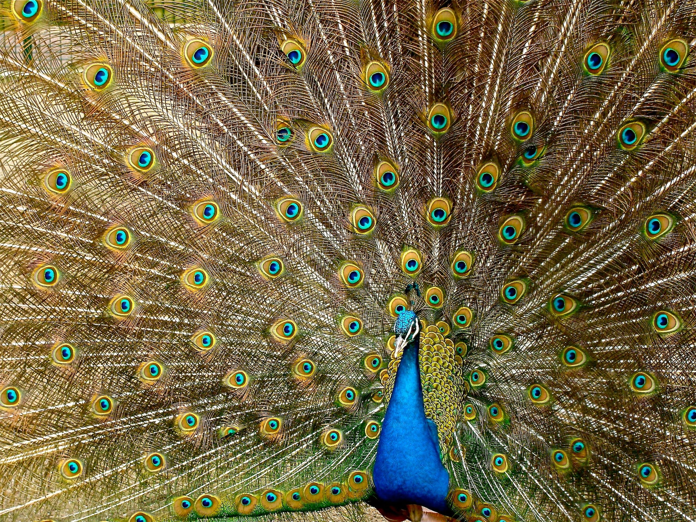

Peacock
Indian peafowl display a marked form of sexual dimorphism. The peacock is brightly coloured, with a predominantly blue fan-like crest of spatula-tipped wire-like feathers and is best known for the long train made up of elongated upper-tail covert feathers which bear colourful eyespots. These stiff feathers are raised into a fan and quivered in a display during courtship. Despite the length and size of these covert feathers, peacocks are still capable of flight. Peahens lack the train, have a white face and iridescent green lower neck, and dull brown plumage. The Indian peafowl lives mainly on the ground in open forest or on land under cultivation where they forage for berries, grains but also prey on snakes, lizards, and small rodents. Their loud calls make them easy to detect, and in forest areas often indicate the presence of a predator such as a tiger. They forage on the ground in small groups and usually try to escape on foot through undergrowth and avoid flying, though they fly into tall trees to roost.
Indian Lion

The coastal areas of the western Indian state of Gujarat are now home to more than 100 lions. Experts say it shows that their natural habitat is shrinking. The Gir forest in Gujarat - the only natural habitat of the Asiatic lion - had around 400 lions in 2020, according to a state forest department estimate. The rest of the state has around 275 lions, of which 104 have spread themselves across 300km (186 miles) of Gujarat's coastline. Conservationists say the unusual movement is happening because the natural habitat of lions has become overcrowded. "Normally, it is difficult for lions to adapt to a coastal habitat, but they have no option because of scarcity of land," Dr Nishith Dhariya, a wildlife scholar, says. Lions were once widespread across Gujarat, but their numbers shrank to a mere dozen in the early 20th Century, mainly due to hunting and drought. Since then, conservation efforts have helped their population soar in the dry, deciduous Gir forests. But many experts have said for years that the Gir sanctuary has become too small for the territorial animals.
Dog

Introduction It may come as a surprise to some but these are few of the only pure breeds that originate in India. There has been no human intervention in their breeding process, through any kind of selective breeding. These homebred or the pure village dogs do need much maintenance and make adorable family pets if you socialize them early. You do not have to look any further to get one home, you can adopt one of the numerous puppies available around you in the streets or from the shelter and just give them a cosy home. Urbanisation has given rise to a lot of inter breeding, leading to the rise of many street dogs that you can see around you. Not all of the street dogs that you may see can be called Indian Pariah Dogs. These dogs have a cautious temperament. These pure breds can adapt to any Indian weather, so you would not need to think much to bring them home. They are docile with the whole family and friendly with the kids though early socialization is the way to go with these naturally purebreds. One of the biggest advantages of this dog is that they are healthy and hardy breed.
BROW-ANTLERED DEER (Cervus eldii)

With the grandest of antlers, Sambar deer is India’s largest forest ruminant, with a dark brown coat, weighing up to 180-270 kilograms. Males have huge three-tined antlers that can grow upto 1 metre long. They are found throughout India, except high Himalayas, desert, kutch and the coast. Their habitat ranges from dry to moist deciduous forest, scrublands to wetlands, tropical evergreen forests, to pine and oak forests. Sambar deer prefers moist habitat but are easily adaptable to the dry areas. This mighty creature is highly territorial and are often seen fighting for their land.